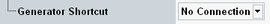

Shortcut Configuration
This section configures a shortcut softkey that provides a fast way to access the GPRF generator from the measurement.
The setting is a common measurement setting. It has the same value in all NB-IoT measurements (NPRACH measurement and multi-evaluation measurement).

Shortcut configuration
Selects a GPRF generator instance. Softkeys for the selected instance are added to the softkey panel.